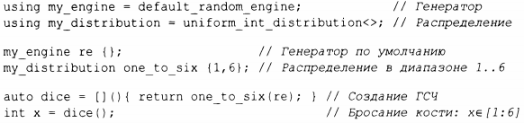
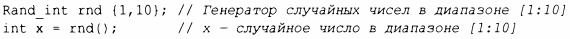
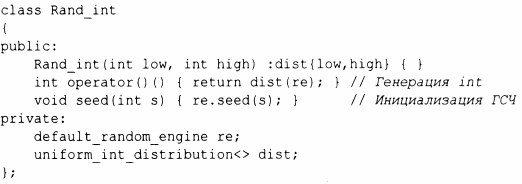
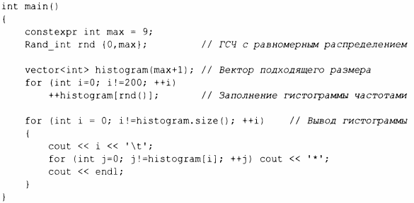
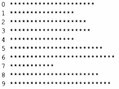

⇐14.4 Комплексные числа 14.6 Векторная арифметика⇒
Случайные числа полезны во многих контекстах, таких как тестирование, игры, моделирование и безоnасность. Разнообразие областей nрименения отражается в широком выборе генераторов случайных чисел, nредоставляемых стандартной библиотекой в заголовочном файле <random>. Генератор случайных чисел состоит из двух частей.
Примерами распределений являются uniform_int_distribution (все целые числа получаются с одинаковой вероятностью), normal_distribution (нормальное (гауссово) распределение) и exponential_distribution (экспоненциальное распределение); каждое из них применяется для определенного диапазона. Например:
Благодаря своему бескомпромиссному вниманию к общности и производительности случайные числа стандартной библиотеки были охарактеризованы одним экспертом как ''то, чем хочет быть каждая библиотека случайных чисел, когда вырастет". Однако эту часть стандартной библиотеки вряд ли можно считать дружелюбной по отношению к новичкам. Использование инструкций using и лямбда-выражений делает код немного более понятным.
Для новичков (с любыми базовыми знаниями) серьезным препятствием может стать очень общий интерфейс библиотеки случайных чисел. Однако для начала работы зачастую достаточно простого генератора случайных чисел с равномерным распределением. Например:
Итак, как мы можем получить такой генератор? Нам нужно что-то наподобие рассмотренного выше dice(), что объединяет генератор с распределением внутри класса Rand_int:
Это определение по-прежнему находится на "уровне эксперта", но применение Rand_int( ) возможно уже на первой неделе курса С++ для новичков. Например:
Результатом оказывается (обнадеживающе скучное) равномерное распределение (с разумными статистическими отклонениями):
Стандартной графической библиотеки в С++ не существует, поэтому я использую "АSСII-графику". Очевидно, что существует множество программ с открытым исходным кодом, коммерческой графики и графических библиотек для С++, но я в этой книге ограничусь стандартными средствами ISO.